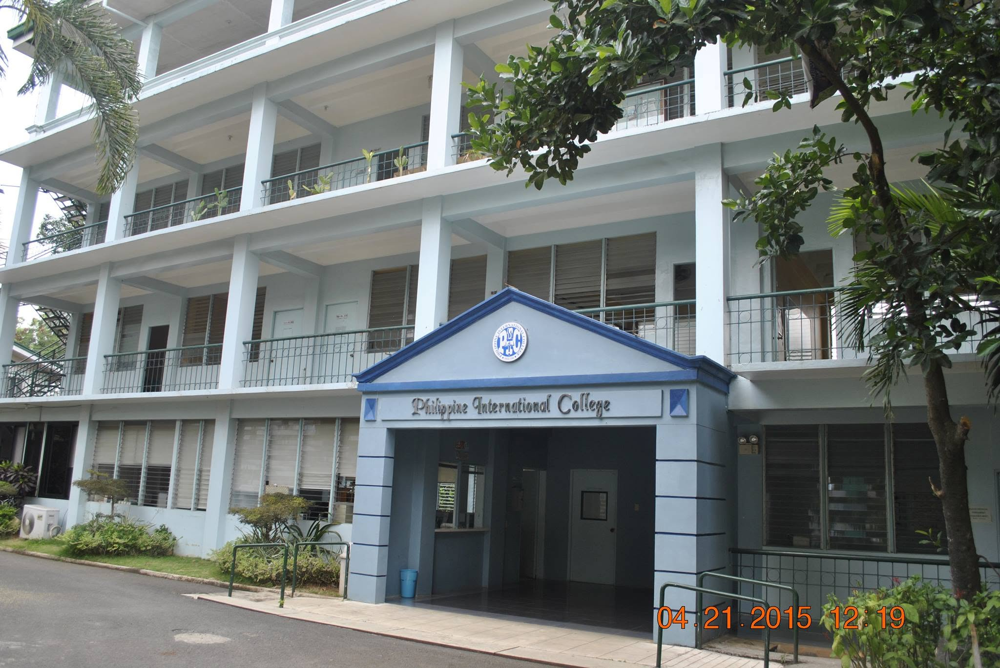
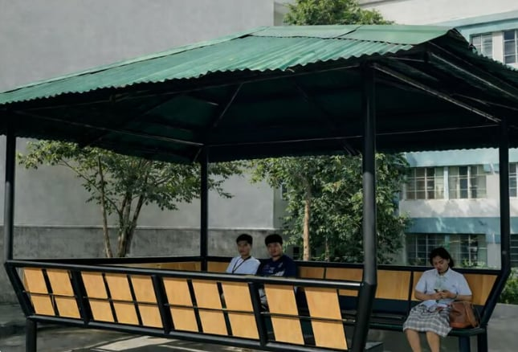
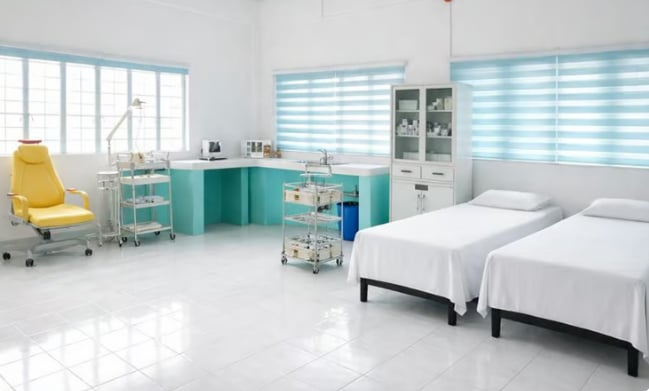
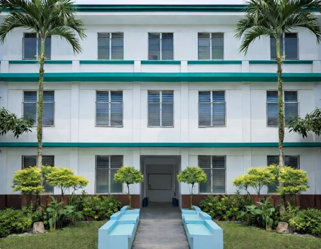

View

Benches
The campus features Outdoor Learning Kubos and School Benches that provide students with a calm and refreshing environment for study, reflection, and group discussions. Designed to promote comfort and creativity, these open-air learning spaces allow students to engage in academic activities while enjoying natural surroundings.
These facilities support alternative learning methods, encouraging collaboration, focus, and well-being beyond the traditional classroom setting. The Outdoor Learning Kubos reflect the school's appreciation of Filipino culture while fostering a peaceful and conducive atmosphere for learning.

Clinic
The School Clinic is an essential part of the institution's commitment to student welfare and safety. It is designed to provide a clean, safe, and supportive environment where students and school personnel can receive immediate medical attention when needed.
The clinic is equipped with basic medical supplies and first-aid equipment to address common health concerns, minor injuries, and emergency situations during school hours. It also serves as a space for health monitoring, rest, and initial care before referral to appropriate medical facilities when necessary.
Managed with care and responsibility, the School Clinic plays a vital role in promoting health awareness, preventing illness, and ensuring that students remain physically fit and ready to learn. Through its services, the school upholds a culture of safety, wellness, and compassion within the campus.

Computer Laboratory
The Computer Laboratory is a modern learning facility designed to support digital literacy, academic instruction, and technological development. It provides students with access to computers and essential software needed for research, coursework, and hands-on learning activities.
Equipped with reliable computer units and a structured learning environment, the laboratory serves as a venue for computer-based instruction, online research, and skill development in information and communication technology. It also helps students enhance their problem-solving abilities, technical skills, and familiarity with digital tools essential for today's academic and professional demands.
Through the Computer Laboratory, the school promotes responsible technology use and prepares students to adapt to the evolving digital world, supporting its mission to deliver quality and future-ready education.
Dormitory
The School Dormitory provides students with a safe, comfortable, and supportive residential environment within the campus. It is designed to promote discipline, responsibility, and community living while ensuring the well-being of its residents.
The dormitory offers clean and orderly living spaces that allow students to rest, study, and interact in a conducive atmosphere. With established guidelines and supervision, the facility supports students' academic focus and personal development while away from home.
By providing on-campus housing, the School Dormitory helps create a secure and structured environment that encourages unity, respect, and balanced student life, contributing positively to the overall learning experience.

Chapel
The School Chapel serves as a sacred space dedicated to prayer, worship, and spiritual reflection. It provides students, faculty, and staff with a quiet and peaceful environment where they can strengthen their faith, seek guidance, and find inner peace.
As the spiritual center of the campus, the chapel hosts regular worship services, prayer gatherings, and religious activities that nurture moral values, spiritual growth, and a sense of community. It also offers a place for personal meditation and reflection, supporting the holistic development of every member of the school community.
Through the School Chapel, the institution affirms its commitment to faith-based education, spiritual formation, and the cultivation of compassion, integrity, and service.
FAQs
What is this?
Our facilities provide safe viewing spaces for students during school events.
Who can use them?
Students, teachers, and staff can access these areas to watch activities comfortably.
Are the facilities accessible?
Yes, all viewing areas are designed to be accessible for students with different mobility needs.
Is prior booking needed?
No booking is required; just arrive and enjoy the event.
Are adults allowed?
These spaces are primarily for students and school personnel only.
What safety measures are in place?
Our facilities follow strict safety protocols, including supervised entry and emergency exits.